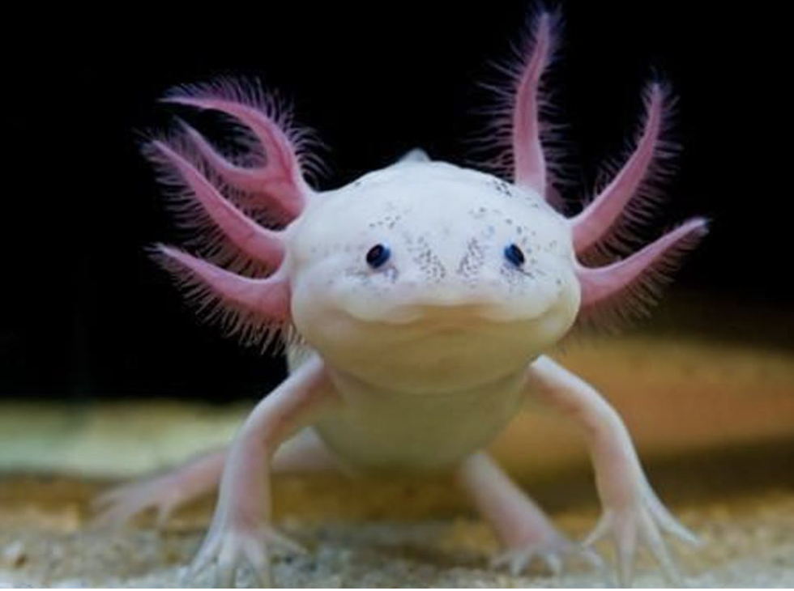

El axolote mexicano o ajolote, Ambystoma mexicanum, es una salamandra con la característica poco habitual de conservar sus rasgos larvales en su vida adulta. Esta condición, que se conoce como neotenia, significa que conserva su aleta dorsal de renacuajo -que recorre casi la totalidad de su cuerpo- y sus branquias externas, que sobresalen de la parte trasera de su ancha cabeza en forma de plumas. Este singular anfibio se encuentra en peligro crítico de extinción según la lista roja de la Unión Internacional por la Conservación de la Naturaleza, debido a la pérdida de hábitat, la introducción de especies invasoras en su hábitat, la sobreexplotación, la contaminación y su consumo como alimento. El axolote se encuentra únicamente en el complejo lacustre de Xochimilco (pronunciado Sochimilco), cercano a la ciudad de México, y difiere de la mayoría de las salamandras en que vive permanentemente en el agua. En casos extremadamente raros, el axolote madura y sale del agua, pero en la mayoría de los casos prefieren permanecer en el fondo de los lagos y canales de Xochimilco. “En 1998 había 6000 axolotes por kilómetro cuadrado. El último censo se realizó en 2014 y había sólo 36 [por kilómetro cuadrado]. Gracias a esos censos nos dimos cuenta de que el anfibio está al borde de la extinción y si no hacemos algo se perderá en vida silvestre en poco tiempo. En menos de 20 años bajamos de 6000 a 36 por kilómetro cuadrado”, aseguró en noviembre de 2023 Luis Zambrano González, del Instituto de Biología de la Universidad Nacional Autónoma de México (UNAM), durante la presentación de la a campaña Adoptaxolotl 2024.
